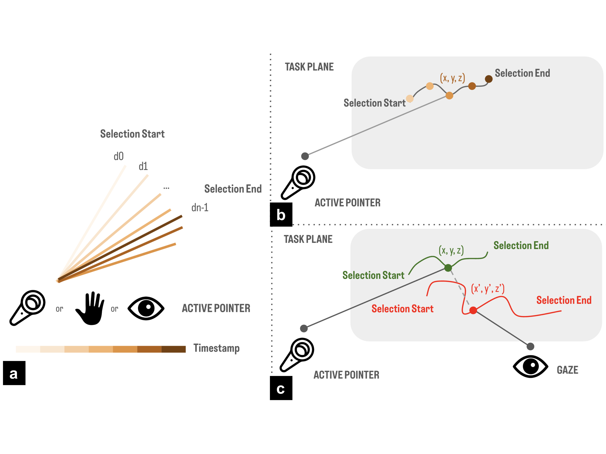
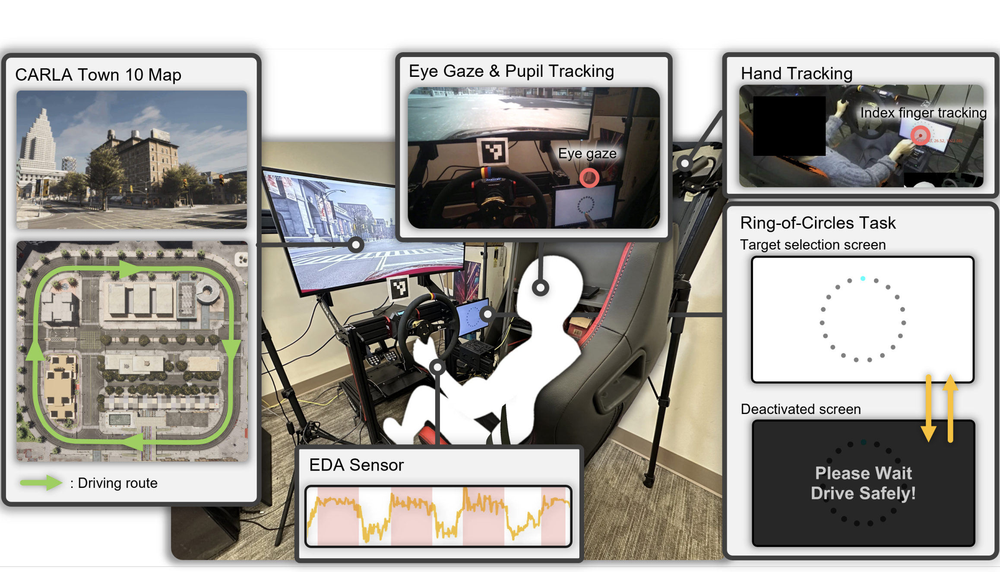
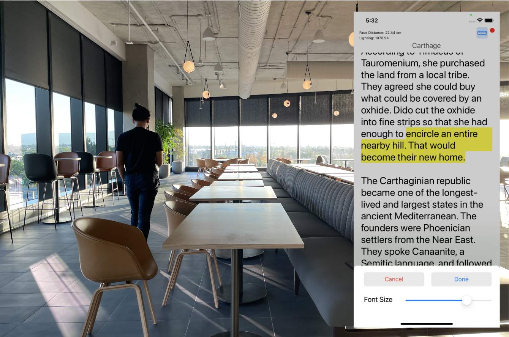
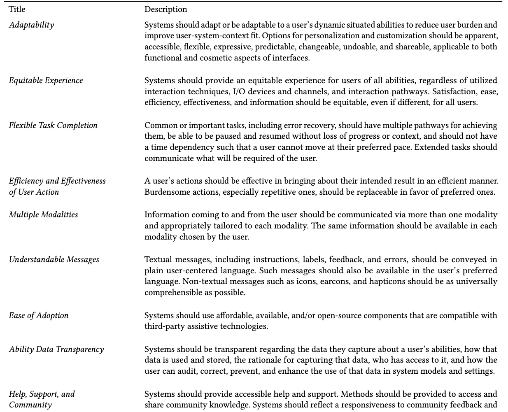

Junhan "Judy" Kong is a final-year Ph.D. candidate in the Information School at the University of Washington, advised by Prof. Jacob O. Wobbrock in the ACE Lab, the DUB Group, and the CREATE Center. Prior to that, she received her Bachelor's and Master's degrees in Computer Science with an additional major in Human-Computer Interaction and minors in Statistics and Machine Learning at Carnegie Mellon University, where she worked with Prof. Jeffrey P. Bigham and Prof. Anhong Guo. She has also worked at Adobe Research and Meta Reality Labs as a research scientist intern.
Her research is in human-computer interaction (HCI) with a focus on accessibility, interaction techniques, adaptive interfaces, AR/VR, and human-centered AI. Her work has been published at top-tier conferences including CHI, UIST, ASSETS, MobileHCI, and SUI, and has received the Best Paper Award from MobileHCI and a Best Paper Nomination from ASSETS.
Research Highlights
My research is guided by a vision of computing systems that recognize and serve human diversity: user needs vary across abilities, contexts, and situations, and even at different times of day for the same person—there isn't a one-size-fits-all solution that simply works for everyone. To address the heterogeneity of human abilities and needs, I create technologies that understand and adapt to the varying abilities of their users, and infrastructures that empower designers and developers to create accessible and personalized interfaces.
My research approaches this vision through three pillars of work: (1) Modeling Abilities: quantitative characterization of human abilities through input behavior and sensor data, (2) Adapting Interfaces: human-AI collaboration on interface adaptations based on these abilities, and (3) Empowering Creators: design and development support for ability-based interface creation.
Modeling Abilities
“How can we turn interaction behavior into measurable, actionable representations of users' abilities?”
Quantitative characterization of human abilities through input behavior and sensor data
-
Quantifying Touch
(ASSETS ’22 , ’21)
 Quantifying Touch: New Metrics for Characterizing What Happens During a Touch
ASSETS 2022
Best Paper Nominee
Quantifying Touch: New Metrics for Characterizing What Happens During a Touch
ASSETS 2022
Best Paper Nominee
 New Metrics for Understanding Touch by People with and without Limited Fine Motor Function
ASSETS 2021 Poster
New Metrics for Understanding Touch by People with and without Limited Fine Motor Function
ASSETS 2021 Poster
-
Quantifying 3D Pointing
(ICMI ’26)

Quantifying 3D Pointing: Characterizing What Happens During Pointing Selection in Virtual Reality ICMI 2026 (To Appear) -
Touchscreens in Motion
(UIST ’25)

Touchscreens in Motion: Quantifying the Impact of Cognitive Load on Distracted Drivers UIST 2025
Adapting Interfaces
“How should adaptive interfaces leverage intelligent capabilities while retaining human agency?”
Human-AI collaboration on interface adaptations based on users' abilities
-
Mobile Reading while Walking
(CHI ’25, UIST ’23)

Supporting Mobile Reading While Walking with Automatic and Customized Font Size Adaptations CHI 2025 Improving Mobile Reading Experiences While Walking Through Automatic Adaptations and Prompted Customization
UIST 2023 Poster
Improving Mobile Reading Experiences While Walking Through Automatic Adaptations and Prompted Customization
UIST 2023 Poster
- Personalized Keyboard (Manuscript) Personalized Keyboard Available upon request
-
Personalized Gestures
(ASSETS ’23)
 How Do People with Limited Movement Personalize Upper-Body Gestures? Considerations for the Design of Personalized and Accessible Gesture Interfaces
ASSETS 2023
How Do People with Limited Movement Personalize Upper-Body Gestures? Considerations for the Design of Personalized and Accessible Gesture Interfaces
ASSETS 2023
Empowering Creators
“How can we systematically lower barriers for creating accessible interfaces?”
Design and development support for ability-based interface creation
-
ABD-MT
(MobileHCI ’24 )
 The Ability-Based Design Mobile Toolkit (ABD-MT): Developer Support for Runtime Interface Adaptation Based on Users’ Abilities
MobileHCI 2024
Best Paper Award
The Ability-Based Design Mobile Toolkit (ABD-MT): Developer Support for Runtime Interface Adaptation Based on Users’ Abilities
MobileHCI 2024
Best Paper Award
-
Ability Heuristics
(CHI ’26)

Ability Heuristics for Conducting Accessibility Inspections CHI 2026 - Design Tool (Manuscript) Design Tool Available upon request
Publications
(//)
Quantifying 3D Pointing: Characterizing What Happens During Pointing Selection in Virtual Reality
Junhan Kong, Jacqui Fashimpaur, Michael J. Proulx, Hemant Bhaskar Surale, Jacob O. Wobbrock, Amy Karlson
ICMI 2026 (To Appear)
Touchscreens in Motion: Quantifying the Impact of Cognitive Load on Distracted Drivers
Xiyuan Shen*, Seokhyun Hwang*, Junhan Kong, Alexandre L. S. Filipowicz, Andrew Best, Jean M. Costa, Scott Carter, James Fogarty, Jacob O. Wobbrock
UIST 2025
PDF | ACM DL | Video | UW News | KIRO Newsradio